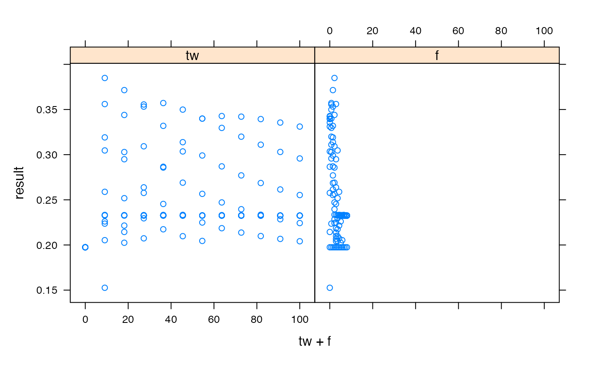

Run many simulations by sampling within parameter ranges.
# S3 method for hydromad simulate( object, nsim, seed, ..., sampletype = c("latin.hypercube", "random", "all.combinations"), FUN = NULL, objective = NULL, bind = !is.null(objective) )
| object | a |
|---|---|
| nsim | number of parameter samples to run. |
| seed | optional random seed, for repeatability. |
| ... | further arguments to |
| sampletype | sampling method; see |
| FUN | optional function to apply to each simulated model. Typical
examples would be |
| objective | an objective function (or statistic function); this is just
an argument to be passed on to |
| bind | to bind the result from |
a list of results, where each element is named by its parameter set.
The result also has an attribute "psets" which gives the parameter
values used in each simulation (as a data frame).
If bind = TRUE, a data frame.
none yet.
Felix Andrews felix@nfrac.org
data(Canning) mod0 <- hydromad(Canning[1:500, ], sma = "cwi") sim0 <- simulate(mod0, nsim = 5, sampletype = "latin") coef(sim0)#> tw f scale l p t_ref #> tw=50, f=2, l=0, p=1, t_ref=20 50 2 1.177428e-05 0 1 20 #> tw=0, f=4, l=0, p=1, t_ref=20 0 4 2.159142e-04 0 1 20 #> tw=100, f=6, l=0, p=1, t_ref=20 100 6 8.978107e-06 0 1 20 #> tw=25, f=0, l=0, p=1, t_ref=20 25 0 4.535322e-05 0 1 20 #> tw=75, f=8, l=0, p=1, t_ref=20 75 8 8.949261e-06 0 1 20#> rel.bias r.squared r.sq.sqrt r.sq.log #> tw=50, f=2, l=0, p=1, t_ref=20 -6.792001e-17 -0.2964138 -0.3549607 -0.4302310 #> tw=0, f=4, l=0, p=1, t_ref=20 1.720709e-17 -1.6340737 -0.7640808 -0.4968276 #> tw=100, f=6, l=0, p=1, t_ref=20 8.077254e-17 -0.4916033 -0.4320486 -0.4671808 #> tw=25, f=0, l=0, p=1, t_ref=20 5.923279e-18 -0.2566781 -0.2921281 -0.3663058 #> tw=75, f=8, l=0, p=1, t_ref=20 -2.450985e-17 -0.4956284 -0.4333150 -0.4676961## plot the objective function surface over two parameters mod1 <- update(mod0, routing = "armax", rfit = list("ls", order = c(2, 1))) sim1 <- simulate(mod1, 144, sampletype = "all", FUN = objFunVal, objective = ~ nseStat(Q, X, trans = sqrt) ) levelplot(result ~ tw + f, sim1, cex = 2, panel = panel.levelplot.points, main = "R Squared (of sq.rt. data) over parameter space" ) + latticeExtra::layer(panel.2dsmoother(...), under = TRUE)## dotty plots (list any number of parameters in formula) xyplot(result ~ tw + f, sim1, outer = TRUE)